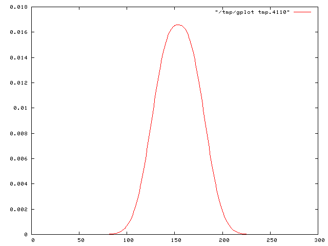
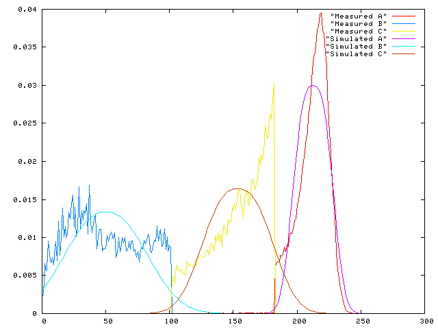

eplot ("easy gnuplot") is a ruby script which allows to pipe data easily through gnuplot and create plots quickly, which can be saved in postscript, PDF, PNG or EMF files. Plotting of multiple files into a single diagram is supported.
The easiest way is to pipe the data through the program. Let's assume that you have a file called data.txt, the syntax would be:
cat data.txt | eplot
Which will give a result looking like this:
Multiple plots in a single diagram are supported.
More information and full documentation can be found on the github page.